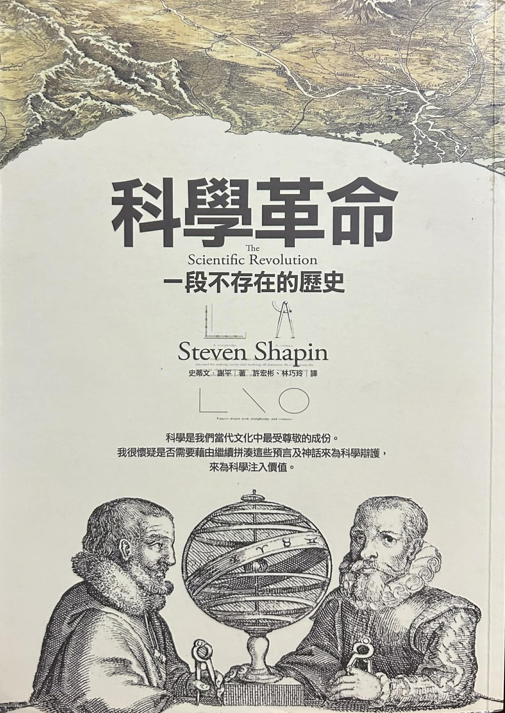

書評：《科學革命》
本文搬運自我的Medium，和原版差異僅在於文字編修。
《科學革命》（The Scientific Revolution）是哈佛大學科學史教授Steven Shapin於1996年初版的科學革命介紹書籍，臺灣由左岸文化出版。本書由Shapin的上課教材編纂而成，主旨在於介紹科學革命的內容和相關的歷史學或社會學議題。作者嘗試破除傳統歷史學中對科學革命的理解，帶入新的史學研究，並試圖論證一個看似激進的論點:「There was no such thing as the Scientific Revolution」。
「科學革命」此概念在1943年被法國歷史學家Alexandre Koyré提出後，傳統歷史學一直認為這段時期是現代性的起源，改變了人類思考的方式，就像戴上一副新的眼鏡(putting on a new pair of spectacles)。譬如英國歷史學家Herbert Butterfield曾說:
[The Scientific Revolution] outshines everything since the rise of Christianity and reduces the Renaissance and Reformation to the rank of mere episodes . . . [It is] the real origin both of the modern world and of the modern mentality.

既然這是一個如此有影響力的時期，作者為甚麼認為科學革命不存在？這共可分為三點：
- 使用「the」代表的是有一個唯一的科學革命，但實際上後面還有化學或達爾文的生物學創發，那似乎用the並不恰當。
- science （科學）一詞在17世紀前並沒有現代人所理解的意涵，而是指涉properly constituted knowledge，所以，並不是有一種稱作science的文化體經歷了變革，而是在17世紀的事件導致了現代意義的science誕生。
- Revolution代表巨大的變革，但歷史學的新研究指出，這些被傳統觀點認為「新穎」的要素很多只是復古的內容、或是在復古的大旗下從事新的實作，因此這段時期的歷史仍是連續的，而非斷裂的。
所以，實際上作者並未否定此事件的重要性，而是強調過去史學和大眾的理解或措辭不當，希望透過此書把新的研究介紹給大家。
本書除了上述論證外，他以三個章節區分，分別是What (他們知道了甚麼)、How (他們如何知道)、Why (他們為甚麼想知道、目的是甚麼)；並以四個主題貫穿全文，包含：the mechanization of nature、the depersonalization of natural knowledge、the attempted mechanization of knowledge making、the aspiration to use the benign and disinterested reformed natural knowledge to achieve moral, social, and political ends。內容我後面會簡單敘述。
以下先從內容、書寫風格和架構，後面會提到書本內容和我的個人心得。
1 本書主題簡介
以下我按What、how、why的章節簡述內容。
1.1 What
第一章what說明了17世紀之前主流的自然哲學理論，即：中世紀教會修改後的經院版亞里斯多德的自然哲學理論（下簡稱亞氏自然哲學），並說明當時新的機械論（mechanical view of nature, or mechanical philosophy）和亞氏哲學的差異，以及機械論的新觀點或發現。本書在極小的篇幅內呈現許多兩個學說的對比，我就不一一贅述了，僅抓幾個印象比較深刻的重點簡述，我比較感興趣的部分則放在心得討論。
1.1.1 （1）目的論或泛靈論vs.機械論；（2）自然vs.人造物
亞氏自然哲學最大特色是目的論（teleology）和泛靈論（animism），認為萬物有一種傾向、目的、或屬性，以此同時解釋「生物」—包含人—和「大自然」。舉例來說，要解釋托里切利實驗中倒裝的汞柱或水柱為何有特定的高度，亞氏哲學觀點認為因為水有厭惡空無一物的特性，故那個高度就是厭惡程度的表現；同理，此論者會認為土有往下掉的傾向。由此可知，這實為從生物學或人類中心的觀點出發的大一統哲學理論，如同我們會觀察到樹有「長大」的傾向，人做事總有個「意圖」。所以，亞氏哲學僅是把此觀點套用到所有事物上。但要注意，他們並不認為物質會如人類那樣「思考」。
亞氏哲學第二特色是認為自然「如同」工匠，打造了「完美」的自然事物。所以「自然物」和「人造物」有本質之不同，自然比較高等。在基督宗教中，地球是墮落的人類的居住地，和天界（太陽等星體）也有本質之不同，所以物理法則可能也不同。
機械論則反其道而行，認為解釋大自然，應該要用「粒子–運動」這種機械般的方式解釋，而且機械的人造物就可以「比擬」大自然。針對汞柱上方的真空部分，機械論會以「平衡」的概念去解釋。
其次，天界的規則和地球的物理規則是相同的，這可由牛頓物理學強大的預測力來佐證。另一個例子是伽利略當初看到太陽上的黑點後，根據計算斷言黑點是在太陽上，因此天體似乎並非「完美」。
要注意到，我們現代的科學普遍相信機械論，但那時的觀測技術不足，所以這樣的說法只可謂新穎的哲學觀點，而非以紮實的觀察作為基礎。因此，理解當時的機械論哲學家如何論據、如何說服其他人變得非常重要。
1.1.2 （3）抽象性質和可理解性（intelligibility）
此爭點牽涉到兩種理論觀點對物的構成的根本想像。
亞氏哲學中，物包含「物質」和「抽象屬性或是substantial forms（實質形式）」兩個要素。1 譬如亞歷山大雕像包含「石頭」和「亞歷山大的形象」。老鼠的構成除了有血肉，還有「老鼠的概念」附在上面，兩者缺一不可；若少了老鼠的形象，則那塊血肉就不是「老鼠」了。在解釋事物上，亞氏哲學將人的感受歸咎於物的屬性（當我用這個詞彙時我已經是機械論者了，哈）。例如，火是熱的，代表火有熱的屬性；玫瑰花有溫暖或甜美的屬性。
相對地，機械論把物的構成拆分成主要性質（primary qualities）和次要性質（secondary qualities），前者意指物質和運動，後者意指人受到主要性質影響後對此物的感受。因此，火焰並沒有熱的特性，而是粒子震動後導致我的手感覺「熱」。再者，機械論者僅肯認物質和運動這類有形（tangible）事物的解釋方式，否定亞氏哲學的實質形式論，認為採用到抽象形式的理論是「不可理解的」（un-intelligible）、神祕的（occult）。即便機械論者堅稱，但這種論調在當時很難說比亞氏哲學更好「理解」。捫心自問，我們要怎麼說哪一個說法好理解呢？似乎只能說哪一個更實用？
由此開始，主觀的感受被認定是比較不可靠的，新的機械論者還認為這種抽象形式的理論時常服膺於教會的教條主義。
1.1.3 （4）機械論與數學的關係
當代的科學和數學關係緊密，但17世紀時機械論者並不必然使用數學，他們只是偏好用機械、物質、運動的原則來解釋萬物。這要等到如Kepler或牛頓等人，使用數學幫助物理和天文學發展理論和展現其預測力後，才漸漸被接受。過去不被接受的原因大概是數學物件的idealization，雖然有紮實的邏輯，但總是和觀測結果有些差距。
有一常見的說法認為牛頓是機械論的集大成者，但他飽受批評的一點在於，他放棄思考「引力」這種抽象力的機械因。納入引力這種主動的力，讓機械論似乎又重新引進抽象的、目的論的神祕力量。
1.2 How
本章圍繞在機械論哲學家是如何（認為自己）「知道」和「傳播」這些新知的，如新儀器的使用、實驗法的發明、實驗報告的流傳。這裡每一個階段都會引起些爭議，譬如伽利略新的望遠鏡發明後，不是每個人都會使用、也不是都看到他宣稱的星體，因此，這種當代認為理所當然的新器材，也是需要花時間使人接受的。本章也提及新思想的神學基礎和復古的觀念，復古一說強調了當時的人目標是尚古，而非革命。
1.2.1 （個人）觀察經驗與復古
第一個主題是（個人）觀察和經驗的重要性。基督宗教認為人類是墮落的，所以感官也是虛假的，只有古代聖人血系才有真實的感官。所以，至少文藝復興時期，普通人的感官只是用來跟古代聖人的文獻搭配，而非佔據主導地位。直到17世紀，個人觀察才變得重要。
神學上，基督教始終有一說認為上帝有兩本書：聖經和自然之書。而在新教的風潮下，自主閱讀自然之書是獲肯認的，這進一步影響17世紀的新自然哲學家或機械論者，他們如同牧師一般閱讀上帝的自然之書。許多著名的新哲學家—如虎克、培根、波以耳—認為原初的古老典籍才是真實的，但中間的流傳產生錯誤，故閱讀自然之書是為了崇尚原始典籍。
1.2.2 自然發生的經驗（What happens in nature）與特殊經驗（particular experience）的對比
第二個主題是自然發生的經驗（What happens in nature）與特殊經驗（particular experience）的對比。經驗主義和歸納法是新自然哲學的主軸，那到底甚麼經驗可以作為科學基礎呢？亞氏哲學和部分歐陸的機械論者，認為大自然「常見」的現象就是基礎；但在英國，如培根和波以耳等人認為需要小心檢證各種經驗知識的二手報告。更甚的是，以波以耳為首的英國的實作者，認為「特殊經驗」—實驗法的經驗—才是可靠的，而非那些自然發生的、常見的經驗。
對現代人來說，自然發生的經驗和特殊經驗並無二致，但這個差異在當時被認為是存在的。譬如伽利略的滑坡實驗記錄中會說自己做了幾百次，因為他想說明這是自然發生的經驗。霍布斯則批評實驗法，認為若兩者相同，為甚麼需要特地做實驗？
不過，波以耳的空氣幫浦實驗仍確立了現代實驗的準則：他在一個可以抽氣的玻璃容器中放入水銀氣壓計（倒裝的水銀柱），觀察到逐步抽空氣體會使得汞柱下降。這個實驗除了成為後續實驗自然哲學的圭臬，也再次說明了前述「人為」和「自然」的統合。
波以耳的貢獻不僅於此，他和英國的倫敦皇家學會（Royal Society of London)）立下了現代科學社群形式的準則，他們不僅公開做實驗、記錄參與者，也會鉅細靡遺地寫下實驗方法和過程，並寫成報告等，讓「非目擊者」也可以彷彿體會到實驗，以此取信於人。這就是本書提到的兩個主軸：the depersonalization of natural knowledge、the attempted mechanization of knowledge making。
1.3 Why
本章說明機械論者的目的和其社經背景環境等，但作者針對發生科學革命的原因大多簡單帶過就是了，較為可惜。
1.3.1 科學革命的原因和國家權力
在前兩章中，一個重複出現的主題是「新的自然哲學對傳統哲學的攻擊」，其脈絡之一為機械論者和傳統大學機構的衝突。傳統大學從屬於教會而服膺於經院哲學，更重視經典閱讀和辯論；新的思想家則認為其中充滿以訛傳訛，且辯論後仍缺乏建設性的實用結論。
既然兩派人都是以追求真理為目標，為何只有到17世紀才會誕生現代意義的科學呢？作者粗略地說地理大發現、民族國家的誕生、啟蒙、宗教改革都導致了科學革命。這些動盪引起了以下的影響：
宗教改革讓新的哲學思想反對傳統經院思想，也讓相對來說更多大眾關懷的議題參雜到新哲學中，因而更注重實用的經驗。然而，實際上新的高深理論創造了多少實用的經濟或軍事價值？實證上似乎寥寥無幾，故作者認為這種科學和商業跟軍事的複合體應等到19世紀後才比較明顯。另有論者認為，國家在海外探險上的需求，導致相關的研究領域受到重視，但這點仍沒有定論。
因為歐洲的動盪，從國家穩定或秩序的觀點出發，有論者認為知識需要為其服務和受控管。這點培根可以作為一個代表人物。他認為新的自然哲學可以幫助知識的控制者增強權力，原因有二：第一，控管知識本身能控管大眾。第二，新的科學知識是實用的、可以改造大自然的，因此新的自然哲學是國家重要的財富。所以他的名言「Knowledge is power」其實帶有「權力」的意涵。
這種重視知識管控或秩序的觀點，可在當時新興的學會組織中觀察到（雖然不一定受到政府重視）。學會有自己在方法論概念上的思想，即便彼此間有所不同，但他們普遍重視受到規範的集體勞作（collective labor），而不是毫無管制的個人主義科學實作。他們關心適當的學術行為準則，避免討論爭議性的宗教和政治議題（注意，他們還是相信上帝，所以這沒有「爭議」），讓科學討論容易進行，避免形上學的「主觀意識參雜」。
1.3.2 新科學與宗教的關係
新的科學實作者仍信奉基督宗教，也會發展正當化新實作的宗教論述，包含：閱讀自然之書才能幫助我們回到原典，去除錯誤的內容。或是，新科學可以讓人們重拾離開伊甸園後喪失的控制自然的能力，而重拾此能力是才能讓耶穌再次降臨。以及，即便我們了解很多事物的因果關係，終極的原因可能還是要訴諸上帝。
有些人可能認為，學習新科學會讓人拋棄上帝，然而許多實作者反而認為，新科學會人驚嘆於自然之美，更會認為一定是有個精妙的工匠—上帝—在背後。作者還提到諸多對於上帝跟大自然關係的觀點，例如自然神學（Deists）觀認為上帝設計並讓世界開始運作後就不再管理等，這邊我就忽略不細究。
2 撰寫風格和書本翻譯
本書的撰寫風格上，確實如作者所說，本書由上課講義編纂而成，故每個章節中都有多個小節，並在每節開頭提出幾個新議題和爭點，相當有架構。不過，因為作者在極短的篇幅內塞入關於科學革命的眾多議題，所以未能給予單一議題有較長的篇幅解釋，有時我會讀得一知半解。
本書的翻譯我則認為有點問題，雖稱不上不順，但有時似乎跟原文有小小的出入。這還不打緊，另一大缺點是對專有名詞和人名英文的呈現。翻譯版「不會」在首次出現的翻譯人名的括號中，放入其英文全名，而會直接放中文翻譯，並改在書末放入中英名稱對照。幾個作者粗體或引號的字詞或專有名詞，譯者也未以括號呈現英文原文，作為一本學術著作的翻譯，我覺得不太妥當。
3 心得感想
文內提到不少科學實作上的議題，有些並不局限於17世紀，而是在當今的科學研究中也會見到。以下為我對這些議題的看法和心得。
3.1 理論化和實驗記錄
前面提到波以耳提出新的實驗記錄方法，但這種鉅細靡遺的實驗記錄流派，引來牛頓等人的批評，帶出「理論」和「實驗紀錄」的對比。波以耳本人非常謹慎地對待理論和因果關係；針對機械論中的粒子說，他僅願意做原則性的討論，而避免討論真實現象之原因。換言之，他避免理論化這些實驗記錄。反之，笛卡兒或牛頓都試圖提出現象運作的大理論。
這點我覺得相當有趣，過去我一直以為自然科學是傾向一般化或理論化的學科（至少，相對社會科學和歷史學而言），原來此爭議也在自然科學中存在。若跟先前讀到新康德主義者西南學派對歷史科學的觀點（還未更新到這）結合，或許可以說，後來的自然科學實作者愈來愈倒向一般理論化。不過這也說明自然科學實作者還是有不同流派，或許我應該讀一讀作者推薦，由Kuhn所寫的相關文章。
另外，我一直在想到底要怎麼適當地從現實經驗推論出理論？這個過程真也能被機械化處理嗎？還是這些理論只是呈現出我過去或我所處社會的觀點？
3.2 自然的經驗和特殊經驗，社會科學的因果推論
如前面所述，相對於將自然發生的事件當成科學經驗的來源，英國的新科學實作者崇尚使用特殊的實驗法經驗，引來部分歐陸實作者的反對。雖然作者專精於英國的實驗法歷史等，但這本書很可惜地未著墨實驗法本身的意涵和概念的革新，這是我自己原先想多學習的。
不過，此爭議點出了我最初在學習Rubin Causal Model的小疑問。
在當代社會科學、醫學、或流行病學的量化方法中，我們先統計式地證明一個理想實驗（使用randomized treatment assignment）的結果可以讓我們得到真正的causal effects。後續所有方法，大概都是在某種意義上尋找as-good-as-random的歷史事件，認定唯有此時我們才能計算出真的causal effect。那問題來了：首先，在最好的情況裡，現在的社會科學已經有經費到可以跑實驗，但礙於成本導致的sample size或抽樣母體問題，始終有人質疑其外部效度。其次，實驗室環境和現實社會的環境到底是否足夠相似？此外，即便不是實驗室情境，若我們只研究具備特定as-good-as-random variation的事件，那些沒有這麼理想的、自然發生的社會事件就容易被放棄討論了。但是，這些自然發生的事件，會不會才比較「現實」（例如：某些因素一定會一起發生或是互動等等，而不必然是單一個因素改變）？
這些議題我沒有一個定論，不過這些問題似乎沒有人在討論就是了。
3.3 目的論和人類社會的解釋
機械論中對自然的解釋放棄了亞氏哲學的目的論，然而，這並不代表他們對人也用「非」目的論的方式解釋。同時，機械論更持有「被動的」形上學，認為物體是被動的而非有主動性。我覺得這有點像是[詮釋]社會學特別強調人的意圖這件事，喜愛用文化解釋。經濟學家則反之，傾向貶低文化因素，認為要用外在因素（地理、制度…）解釋人的行為，不喜歡說「人會這樣做，是因為人想這樣做」。(試著把人代換成土)
這裡我就好奇，為甚麼亞氏擬人化的解釋（目的論、發展…），會被廣為接受，是因為巧合或是政治因素？ 還是，是人類解釋事情時習慣用人的思維出發嗎？這似乎和我刻板印象中，傳統人類社會偏愛幫萬物賦予生命或靈魂的觀點相符。
這也代表，擬人化的哲學解釋，原本是遍佈人類社會與自然哲學的。但從科學革命開始，機械論從自然哲學起步，反撲到社會跟人文學科上。
4 結語
讀這本書的收穫之一在於，能瞭解到當今在社會科學中常見的爭議，原先也都在自然科學存在。這是我原先沒想到的，如實驗記錄派和理論派，以及目的論解釋從自然科學的撤退等。
但另一個收穫（或是迷惘？）是作者最後一小節的討論，他提到新的科學中「去除價值討論」，期待以此客觀地描述世界。因為價值的討論被認為是主觀和武斷的，避免價值討論才能幫科學達到共識。但是，作者認為這個做法只是把人如何認識和如何感受世界等議題放在一旁，導致當代哲學中，認識論成為非常混亂的科目。
最後，機械論也未能解決上帝是否存在或某些神秘主義的問題。前面提過，牛頓自己比較願意接受神秘的引力，這帶出了「機械論的範圍」一問題：我們究竟可以用機械論解釋到甚麼程度？即便是如笛卡兒這類激進的機械論者，還是在人的心靈問題上帶入上帝，認為每個人都有上帝打造的獨特的靈魂，和肉體（機械）結合，而這靈魂是不佔據空間的。這種完全非機械論的解釋，在人的問題上還是會出現。當我們建立了許多可靠的自然科學知識，但關於人（心靈）的知識始終相當混亂，前陣子才看到心靈科學家還在吵心靈是否存在等議題，也許，這會是下一個科學革命的發生處嗎？
自從閱讀《數學確定性的失落》後，我就愈來愈變得不可知論，因為這些終極問題似乎無法解決。讀完這本書後，覺得若不信教，短期內我還是得繼續保持不可知論或是神秘主義的觀點。
腳註
亞里斯多德的原著中是否由此說仍有爭議，但中世紀的經院哲學確有此理論。↩︎